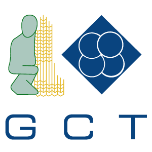

<mat-sidenav-container class="sidenav-container" style="background-image: url('../../../assets/images/slider.jpg');background-size:cover" >
  <mat-sidenav #drawer class="sidenav" fixedInViewport="true"
               [attr.role]="(isHandset$ | async) ? 'dialog' : 'navigation'"
               [mode]="(isHandset$ | async) ? 'over' : 'side'"
               [opened]="!(isHandset$ | async)"
               (opened)="toggleOC()"
               (closed)="toggleOC()" style="background: #699ea1" >
    <mat-toolbar ></mat-toolbar>
    <mat-nav-list style="margin-top: 15px" >
      <a *ngIf="role === 'admin' " mat-list-item routerLink="/home/users-view" style=""><span class="material-icons">
people_alt
</span>&nbsp;<strong>Liste des membres</strong></a>
      <a *ngIf="role === 'admin' " mat-list-item routerLink="/home/repere-list" style=""><span class="material-icons">
pages
</span>&nbsp;<strong>Liste des reperes</strong></a>
      <a  mat-list-item routerLink="/home/pompe-list" style=""> <span class="material-icons">
dynamic_feed
</span><strong> &nbsp;Liste des Pompes</strong></a>
      <a *ngIf="role !== 'admin' " mat-list-item routerLink="/login" style=""><span class="material-icons">
person
</span>&nbsp;<strong>gérer votre compte</strong></a>
      <a mat-list-item routerLink="/login" style=""><span class="material-icons">
power_settings_new
</span>&nbsp;<strong>Se deconnecter</strong></a>
    </mat-nav-list>
  </mat-sidenav>
  <mat-sidenav-content>
    <mat-toolbar style="background: #699ea1">
      <button
        type="button"
        aria-label="Toggle sidenav"
        mat-icon-button
        (click)="drawer.toggle()"
        *ngIf="isHandset$ | async">
        <mat-icon aria-label="Side nav toggle icon" style="background: #699ea1">menu</mat-icon>
      </button>
      <div *ngIf="!(isHandset$ | async)">
        <button mat-icon-button (click)="drawer.toggle()">
          <mat-icon *ngIf="IsOpened">keyboard_arrow_right</mat-icon>
          <mat-icon *ngIf="!IsOpened">keyboard_arrow_left</mat-icon>


        </button>
      </div>
      <span>Gestion des pompes </span>
    </mat-toolbar>
    <!-- Add Content Here -->
    <router-outlet></router-outlet>
  </mat-sidenav-content>
</mat-sidenav-container>
